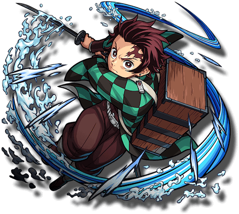
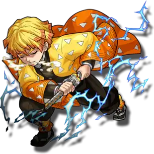
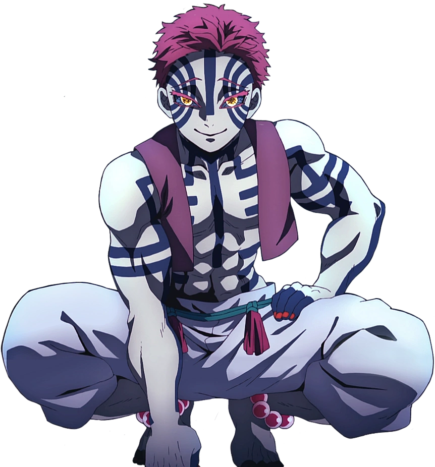
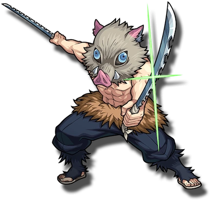
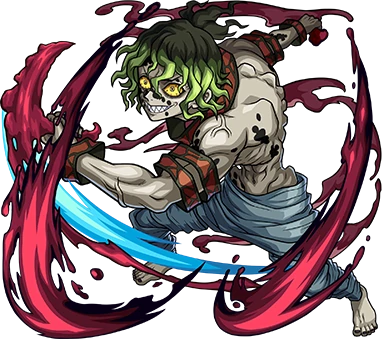

-
Tanjiro
Caçador
Descrição
Tanjiro é gentil por natureza e foi descrito por outros como tendo olhos muito gentis. Ele exibe uma grande dose de determinação e não desistirá uma vez que tenha uma meta a alcançar.
-
Zenitsu
Caçador
Descrição
Zenitsu aparenta ser um covarde, ele também possui uma autoestima baixíssima, apesar de sua força, chegando ao ponto de se considerar inútil.
-
Akaza
Demônio
Descrição
Akaza gosta de lutar, especialmente contra Caçadores fortes. Ele despreza qualquer um que considerasse fraco, mas genuinamente respeitava aqueles que eram fortes aos seus olhos.
-
Inosuke
Caçador
Descrição
Inosuke é um jovem extremamente temperamental e orgulhoso que sempre gosta de pensar que é o lutador mais forte.
-
Gyutaro
Demônio
Descrição
Gyutaro é membro dos Doze Kizukis, ele ocupa a posição de Lua Superior Seis, apesar de ser o verdadeiro dono da posição ele também dividi com sua irmã mais nova, Daki.